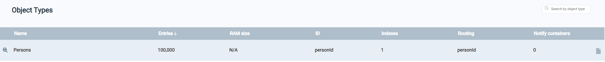

1. Connect to the Database
Click on Connect to data source, to see the Data Connectivity window:

In order to connect to the Postgres database, proceed as follows.
Select the data source as Postgres:

Enter the connection string for the Postgres database, and the Postgres user/password.
Obtain the Connection String
The connection string of the database is used by GigaSpaces and Java JDBC programs to access the database. The connection string can be accessed as follows:
Right-click on the Postgres server and click on Properties.... In the Properties dialog box, click on Connection.
Based on this information, the JDBC connection string is defined as follows:
jdbc:postgresql://localhost:5432/postgres
In the Advanced section, remove the limit of the number of records in the Space:

Press Next and the Persons table will display:

2. Deploy the GigaSpaces
Click on Deploy, then choose the Automatic deployment method:

A screen will display indicating that the deployment process is underway:

When the deployment is successful, the following message will appear:

3. View the Services
On the side menu, click on the Services tab:

This will display the services that were created as a result of the deployment:

4. View the Spaces
Click on the Spaces tab:
to see the Spaces created by the deployment:

Click on the demo Space to see details of the Space object:
5. View the Object Types
Scroll down the page to see the list of Object types in the space. In this example, there is one Object, the Persons Object. This Object corresponds to the Persons table that we created in Postgres, and appears as follows:

Click on the Persons object:

and detailed information about the Persons object will display:


6. Perform SQL Operations on the Object Data
Click on the SQL Editor tab to see the default the SQL command:

To make it more interesting, modify the command as follows:
SELECT * FROM "com.mycompany.app.model.Persons" order by personId LIMIT 5000
Click on Run Query to see the query results: